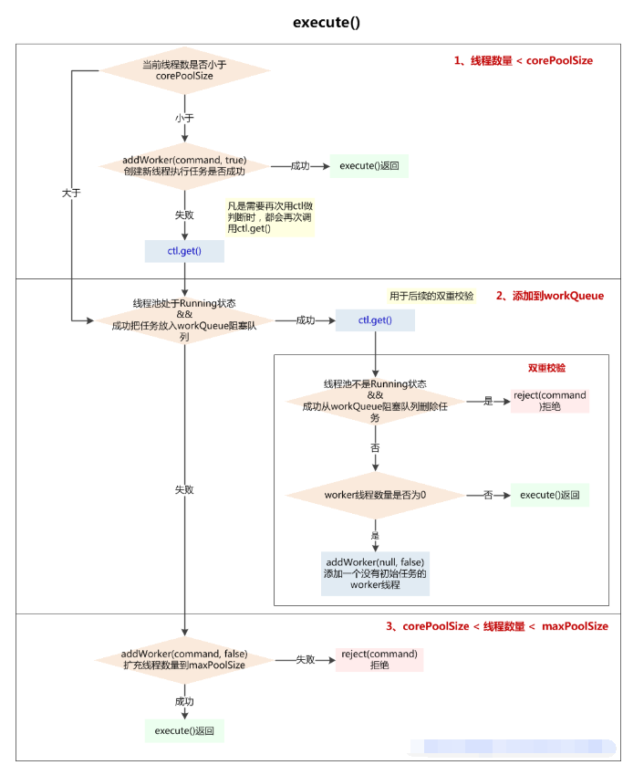

Executor执行器对Thread对象进行管理，通过Executor自带的静态方法为线程提供了定期执行，单线程等功能。通过源码可以发现，线程池的本质还是将线程放在Thread中。
线程池由于可以对线程进行复用，所以在开发过程中，也应该根据实际场景设置适当的参数。
线程复用机制。参考博客：https://blog.csdn.net/mj280824108/article/details/78348472
java.util.concurrent 包提供的创建线程池的工具类。可以创建常用的几种线程池。
参考博客：https://www.jianshu.com/p/414c2c0f594e
特点：只有非核心线程、线程数量最大为Int最大值、灵活回收空闲线程（具备超时机制，全部回收时几乎不占系统资源）、无线程可用时新建线程任何线程任务到来都会立刻执行，不需要等待
应用场景：控制线程最大并发数在程序执行过程中会创建与所需数量相同的线程
特点：只有核心线程 & 不会被回收、线程数量固定、任务队列最大为Int最大长度
应用场景：控制线程最大并发数
特点：只有一个核心线程（保证所有任务按照指定顺序在一个线程中执行，不需要处理线程同步的问题）
应用场景：不适合并发但可能引起IO阻塞性及影响UI线程响应的操作，如数据库操作，文件操作等
特点：核心线程数量固定、非核心线程数量无限制（闲置时马上回收）
应用场景：执行定时 / 周期性 任务
阿里巴巴开发手册推荐使用线程池，为了避免采坑。
前面提到，线程池可以对线程进行重复利用。因此线程池提供此参数来说明线程等待多久如果没有新的任务就自动结束。比如说线程池中最大的线程数为50，而其中只有40个线程任务在跑，相当于有10个空闲线程，这10个空闲线程不能让他一直在开着，因为线程的存在也会特别好资源的，所有就需要设置一个这个空闲线程的存活时间。空闲的线程到了这个存活时间就自动结束。
allowCoreThreadTimeOut(true) 与keepAliveTime对应，此参数设置为true时，则超时结束线程的管理也会针对核心线程corePoolSize。
任务执行完后线程回收问题参考博客
https://blog.csdn.net/zdy0_2004/article/details/50164395
queueCapacity任务队列
rejectedExecutionHandler任务拒绝处理器
当线程池不再接受新的任务时，会拒绝并抛出异常。拒绝策略默认为AbortPolicy（丢弃任务,抛出运行时异常）
ThreadPoolExecutor类有几个内部实现类来处理这类情况：
AbortPolicy丢弃任务，抛运行时异常
CallerRunsPolicy 执行任务
DiscardPolicy 忽视，什么都不会发生
DiscardOldestPolicy 从队列中踢出最先进入队列（最后一个执行）的任务
或者实现RejectedExecutionHandler接口，可自定义处理器
demo
@Slf4jpublic class JobExecute extends QuartzJobBean {
@SuppressWarnings("unchecked")
private static final ExecutorService JOB_EXECUTOR_POOL = new ThreadPoolExecutor(10, 100, 1, TimeUnit.MINUTES,
new LinkedBlockingQueue(Integer.MAX_VALUE)
, new ThreadFactory() {
@Override
public Thread newThread(Runnable r) {
return new Thread(r);
}
});
private ExecutorService service = Executors.newSingleThreadExecutor();
@Override
protected void executeInternal(JobExecutionContext jobExecutionContext) throws JobExecutionException {
JobDetail jobDetail = jobExecutionContext.getJobDetail();
JobDataMap jobDataMap = jobDetail.getJobDataMap();
JobBeanParam param = (JobBeanParam) jobDataMap.get("param");
log.info("执行job，获取参数: "+param.toString());
final IUserService userService = SpringContextUtil.getBean(IUserService.class);
userService.listUserPo();
log.info("job开始执行-----------");
Future future = JOB_EXECUTOR_POOL.submit(new ScheduleRun(param));
try {
future.get();
log.info("执行job无异常---------------");
} catch (InterruptedException e) {
e.printStackTrace();
} catch (ExecutionException e) {
e.printStackTrace();
}
}
}
线程池中维护了一个任务队列和一些工作线程，虽然任务实现了Runable等接口，但是并没有真正被线程执行。工作线程从工作队列中拉去任务执行。
参考博客：
大牛文章：http://www.cnblogs.com/trust-freedom/p/6681948.html
大牛文章： https://www.jianshu.com/p/ade771d2c9c0
